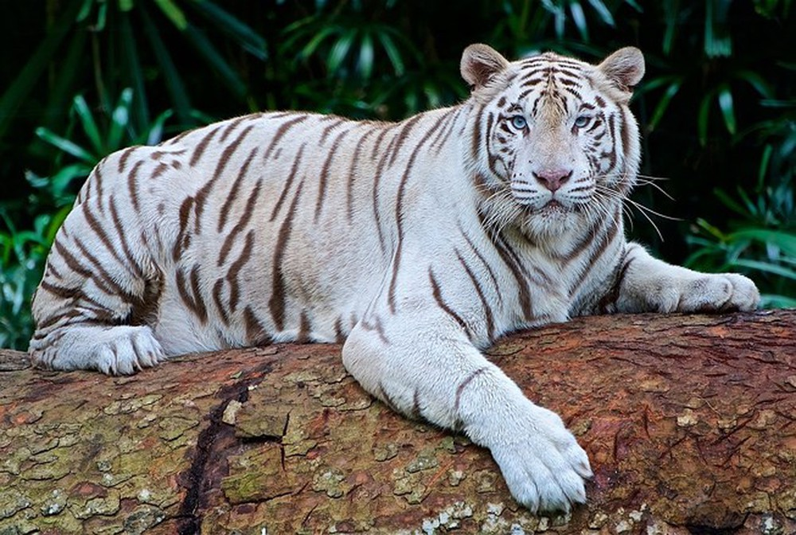
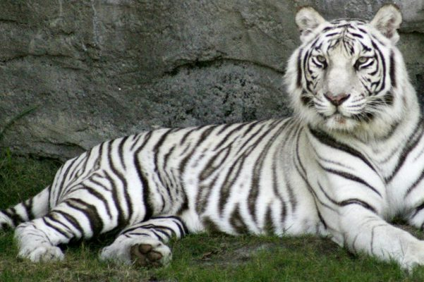

Hổ trắng hay Bạch hổ là hổ với một gen lặn tạo ra những màu sắc nhạt. Một đặc tính di truyền làm cho các sọc của hổ rất nhạt; trắng hổ của loại này được gọi là tuyết trắng hoặc "hoàn toàn trắng". Điều này xảy ra khi một con hổ thừa kế hai bản sao của gen lặn cho màu sắc nhạt màu, một điều hiếm xảy ra. Chúng có một mũi màu hồng, móng chân màu hồng, da vằn xám, mắt xanh da trời băng đá, lông có màu trắng đến trắng kem với các vằn màu tro hoặc sô cô la. Ông H.E. Scott thuộc cảnh sát Ấn Độ đã cung cấp này mô tả mắt một con hổ trắng đang bị nhốt: "Các màu sắc của mắt là rất khác biệt, không phân định rõ giữa màu vàng của comex và màu xanh của mống mắt. Đôi mắt dưới một số ánh sáng trên thực tế không có màu và chỉ hiển thị các con ngươi trên nền màu vàng của ánh sáng ".[1]
Hổ trắng không phải là thú bạch tạng và không cấu thành một phân loài riêng biệt riêng và có thể giao phối với những màu cam, mặc dù tất cả các con sinh ra sẽ dị hợp tử mang di truyền cho các gen lặn trắng, và lông của chúng sẽ được màu da cam. Ngoại lệ duy nhất sẽ có nếu cha mẹ có màu da cam là một con hổ dị hợp tử, điều này sẽ tạo cho con một cơ hội 50% đang được cả đôi lặn dị trắng hay màu da cam. Nếu hai hổ dị hợp tử, trên 25% trung bình con cái của chúng sẽ có màu trắng, 50% sẽ dị hợp tử màu cam (mang gen trắng) và 25% sẽ có màu da cam đồng hợp tử, không có gen màu trắng. Trong thập niên 1970, một đôi hổ màu da cam dị hợp tử tên Sashi và Ravi đã sinh ra 13 con tại Sở thú Alipore, trong đó 3 là màu lông trắng.[2] Nếu hai màu trắng giao phối, 100% số con của chúng sẽ là hổ trắng đồng hợp tử. Một con hổ đồng hợp tử gen trắng cũng có thể bị dị hợp tử hoặc đồng hợp tử cho nhiều gen khác nhau. Vấn đề một con hổ đồng hay dị hợp tử hay không phụ thuộc vào bối cảnh đó gen này đang được thảo luận. Việc lai tăng cường việc đồng hợp tử và đã được sử dụng như là một phương pháp để tạo hổ trắng.
So với màu da cam mà không có gen lông trắng, hổ trắng có xu hướng lớn hơn cả lúc mới sinh và lúc trưởng thành có kích thước lớn đầy đủ.[3] Điều này có thể đã cho chúng lợi thế trong tự nhiên bất chấp màu sắc khác thường của chúng. Hổ màu da cam dị hợp tử cũng có xu hướng lớn hơn hổ màu da cam khác. Kailash Sankhala, giám đốc của Sở thú New Delhi trong thập niên 1960, cho biết: "Một trong những chức năng của gen màu trắng có thể đã được giữ một gen kích thước trong cộng đồng hổ, trong trường hợp đó chưa bao giờ cần thiết" [4]
Do mùa đông kéo dài và nhiệt độ xuống thấp nên loài hổ này bị cạn nguồn thức ăn. Điều này buộc chúng phải tìm đến gần các khu vực dân cư để kiếm ăn và đây chính là một trong những nguyên nhân chúng dễ bị mắc bẫy của những tay thợ săn trộm.